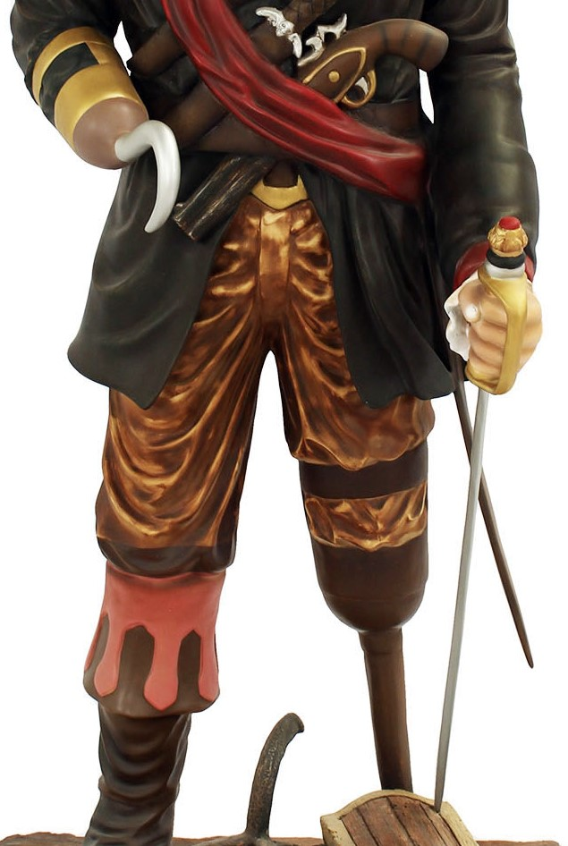

Bits of info
This is info about random things i can find.
Animals facts
The five-limbed body of a starfish radiates around a central disc. If a starfish gets split into five pieces, each piece can survive and regrow itself but only if it contains part of that central disc.

Bactrian camels, also called two-humped camels, can drink up to 88 pints of water (50 liters).Camels love water so much that they will even drink salty water.
A polar bear's hair is not white it's colorless Its strands are thick, hollow, and reflect light. This is what makes them appear white. Polar bears actually have black skin underneath that thick coat of fur, which helps them soak up the sun's warm rays in the chilly Arctic.
Largest of the flamingos, the American Flamingo is the only species of flamingo with any dimorphism. Though there is no difference in color or plumage, the males are significantly taller than the females. There is no real difference between the sexes in other species. They have large, rounded bodies balanced on very straight and very long legs (although the thigh itself is only 3 inches long). The flamingo’s beak, the feature most recognized, sets them apart. A unique shape, with a 45-degree angle in the middle, it facilitates the plumping filtration. The beaks of the chicks are straight.
petalwildlife
facts about virus and diseases
Viruses evolve faster than any other living organism
When one copy of the virus genome gets into a host cell, it multiplies incredibly quickly. Within hours, thousands of copies can be made from a single virus. Since viruses cycle through multiple generations so quickly, they end up making frequent mistakes when copying their genetic information.

Heres ways to prevent catching viruses
cover coughs and sneezes
boost your immunity
stay home if youre sick
wash your hands
Viruses are not really alive viruses operate on the border of life and non-life. Unlike organisms that are clearly alive, viruses dont need food, and they have no metabolism. They have only a handful of genes (often as few as just three or four), unlike bacteria, which have about a thousand genes, and higher forms of life like humans with tens of thousands of genes
 uclahealth
uclahealth
Facts about pirates
pirates did wear patches, but not because they were all missing an eye.In order to help their eyes adjust more quickly between the bright ship deck and the dark belowdecks, pirates would patch one eye so it was always adjusted for the darkness

some pirates did have hooks and wooden pegs.There are a few other fictitious-sounding details about pirates that are accurate. For example, battling pirates surely lost limbs from time to time and some of them would have replaced their absent appendages with a hook or a wooden peg,members of the crew … received compensation for the loss of body parts in action—an early form of worker's compensation.

Pirates wore earrings to ward off seasickness.When pirates accessorized with earrings, they weren't just trying to be fashionable. According to National Geographic, sailors believed that applying pressure to the earlobe would ward off seasickness. In many cases, the pirates would accomplish this by popping on an earring. Unfortunately, though your inner ears do affect your sense of balance, putting earrings in your earlobes does nothing to mitigate seasickness.
There were many women pirates. While men have definitely dominated the world of piracy, there have been several notorious women pirates, including France's Jeanne de Clisson, England's Mary Read, and Ireland's Grace O'Malley and Anne Bonny. America's first female pirate was Rachel Wall, who was eventually arrested for robbery and hanged at the age of 29.
bestlifeonline
facts about wild west cowboys
ELMER MCCURDYS BODY TRAVELED MORE IN DEATH THAN IN LIFE
During his first train robbery, Elmer McCurdy only escaped with less than $500, causing his partners to drop him. After finding another group to run with, he was shot dead during another robbery. No on claimed the body so the funeral home owner decided to claim him, embalm the body, and turn him into a display piece. In 1916, someone impersonating a relative of McCurdys was able to take the body and put it on display. This started the journey his body took, being passed from shows to carnivals. After enough moving around, people seemed to forget that this was the real body of Elmer McCurdy and not a prop. It wasnt until December of 1976, during an episode shoot of “The Six Million Dollar Man”, that people discovered it was a real body. His body was finally laid to rest in April of 1977.
Thanks to a Winchester rifle, we know Billy the Kid wasnt left-handed. A famous tintype photograph of Billy the Kid shows him with a gun belt on his left side. For years, the portrait fueled assumptions that the outlaw, born William Bonney, was left-handed. However, most tintype cameras produced a negative image that appeared positive once it was developed, meaning the end result was the reverse of reality. Theres another reason we know the picture was a mirror image and that Billy the Kid was thus a righty: he poses with his Winchester Model 1873 lever-action rifle. The weapon appears to feature a loading gate on the left side, but Winchester only made 1873s that load on the right.
Smith and Wessons “Russian” model did in Billy the Kid. This revolver went through two iterations before landing at the popular New Model Russian, which was manufactured between 1874 and 1878. Over 60,000 guns were produced, with a large amount going to Russia and the Japanese Navy. Closer to home, this revolver was wielded by Pat Garret, Billy the Kids killer, and was called the Russian because of the large number of units that were sold to Imperial Russia.
histroy
oldwest